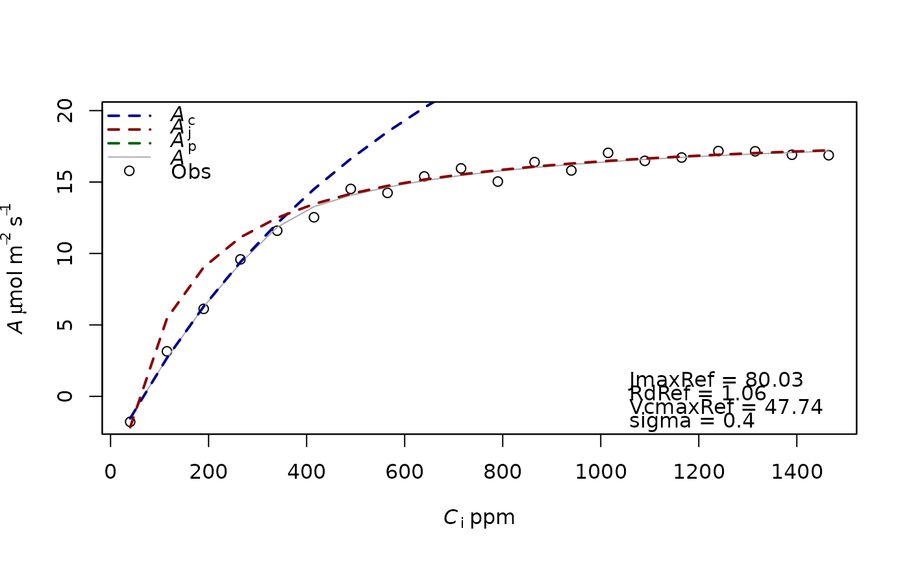

f.fitting.RdFunction to fit model to data. The parameters to fit have to be described in the list Start. All the other parameters of the f.Aci functions have to be in param. If the parameters from Start are repeated in param, the later ones will be ignored. This function uses two methods to fit the data. First by minimizing the residual sum-of-squares of the residuals and then by maximizing the likelihood function. The first method is more robust but the second one allows to calculate the confident interval of the parameters.
f.fitting(
measures,
id.name = NULL,
Start = list(JmaxRef = 90, VcmaxRef = 70, RdRef = 1),
param = f.make.param(),
modify.init = TRUE,
do.plot = TRUE,
type = "Aci"
)Data frame of measures obtained from gas exchange analyser with at least the columns A, Ci, Qin (the light at the leaf surface in micro mol m-2 s-1) and Tleaf (in K). If RHs, Tair, Patm, VPDleaf are also present, their mean will be added in the output, but those columns are not needed to estimate the parameters.
Name of the column in the data frame measures with the name for the curve.
List of parameters to fit with their initial values.
See f.make.param() for details.
TRUE or FALSE, allows to modify the Start values before fitting the data
TRUE or FALSE, plot data and fitted curves ?
Return a list with 3 components, 1 the result of the optim function which is used to estimate the parameters, 2 the output of the function bbmle, 3 the mean variable of the environment during the measurement
##Simulation of a CO2 curve
data=data.frame(Tleaf=rep(300,20),
Ci=seq(40,1500,75),Qin=rep(2000,20),Tair=300,RHs=70,VPDleaf=2,Patm=101,A=f.Aci(PFD=2000,Tleaf=300,ci=seq(40,1500,75),
param=f.make.param())$A+rnorm(n = 20,mean = 0,sd = 0.5))
f.fitting(measures=data,id.name=NULL,Start=list(JmaxRef=90,VcmaxRef=70,RdRef=1),param=f.make.param())
#> $par
#> JmaxRef VcmaxRef RdRef
#> 85.90353 49.16482 2.02100
#>
#> $value
#> [1] 4.629369
#>
#> $counts
#> function gradient
#> 146 NA
#>
#> $convergence
#> [1] 0
#>
#> $message
#> NULL
#>
#> [1] "sd 0.481111694451162"
#> Length Class Mode
#> 1 mle2 S4

#> [[1]]
#> [[1]]$par
#> JmaxRef VcmaxRef RdRef
#> 85.90353 49.16482 2.02100
#>
#> [[1]]$value
#> [1] 4.629369
#>
#> [[1]]$counts
#> function gradient
#> 146 NA
#>
#> [[1]]$convergence
#> [1] 0
#>
#> [[1]]$message
#> NULL
#>
#>
#> [[2]]
#>
#> Call:
#> mle2(minuslogl = f.MinusLogL, start = Start, fixed = Fixed, data = list(data = measures))
#>
#> Coefficients:
#> sigma R O2 TRef Patm JmaxRef
#> 4.811105e-01 8.314000e+00 2.100000e+02 2.981600e+02 1.010000e+02 8.590524e+01
#> JmaxHa JmaxHd JmaxS VcmaxRef VcmaxHa VcmaxHd
#> 4.354000e+04 1.520400e+05 4.950000e+02 4.916447e+01 6.533000e+04 1.492500e+05
#> VcmaxS TpRef TpHa TpHd TpS thetacj
#> 4.850000e+02 8.333333e+00 5.310000e+04 1.506500e+05 4.900000e+02 9.990000e-01
#> thetaip RdRef RdHa RdHd RdS KcRef
#> 9.990000e-01 2.021097e+00 4.639000e+04 1.506500e+05 4.900000e+02 4.049000e+02
#> KcHa KoRef KoHa GstarRef GstarHa abso
#> 7.943000e+04 2.784000e+02 3.638000e+04 4.275000e+01 3.783000e+04 8.500000e-01
#> aQY Theta model.gs g0 g1 power
#> 4.250000e-01 7.000000e-01 0.000000e+00 2.000000e-02 4.100000e+00 5.000000e-01
#>
#> Log-likelihood: -13.75
#>
#> [[3]]
#> Tair Tleaf RHs VPDleaf Qin Patm
#> 300 300 70 2 2000 101
#>